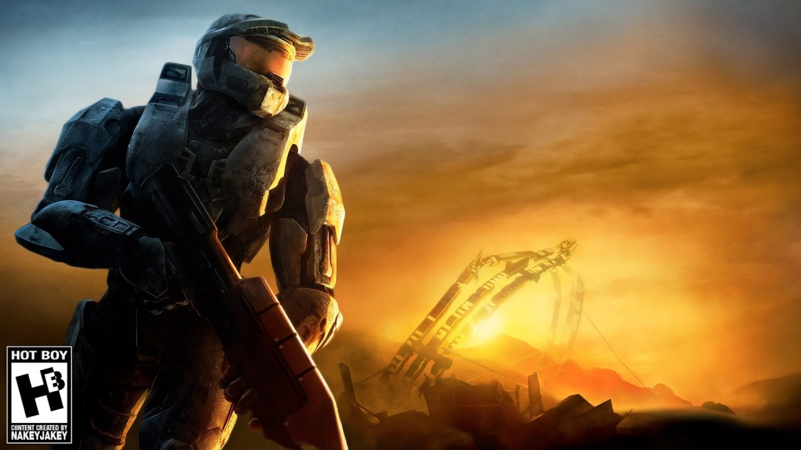

Halo 3 was the end of a trilogy.
The epic conclusion to the fames series made by the studio Bungie.
This game had everything going for it and it pulled it off in an unbelievable manner.
With the addition of campaign co-op, forge, fileshare, and theatre, Halo 3 meant to change how communities worked.
This game is near and dear to my heart in terms of video games.
It ranks as my all-time favorite game.
Any time I think of nostalgia of when I played games at a younger age, this game is always at the forefront.
Not only is Halo 3 where I spent many hours as a kid, it is where I met the group of online friends I play with to this day.
With that much history in my books of this game, it is easy to see why I hold it in such high regard.
I hope to relive this experience in another game in the future, but I'm not for sure what that game will be.

Rocket League
Rocket League is quite honestly the best sports game on the market currently.
It's not actually a sport, but more of a fusion of soccer, hockey, and racing.
The best thing about this game is the gradual curve of getting better.
This game rewards you for playing by increasing both your control and timing of car.
Rocket League has been the consistent competitve game in my rotation for the last few years.
Based on the excitement and joy the competitive mode brings me, I doubt I'll stop playing in the years to come.
Battlefield Bad Company 2
Battlefield Bad Company 2 is the second installment in the Bad Company lineup for the long running battlefield series.
Having come out on the xbox 360 generation of consoles, many gamers look back up this title as one of their favorite in the series.
The era this game took place was a hybrid time frame around the Vietnam War era.
With this being my first battlefield game on consoles, my friends and I became the dream squad for each game.
We could continously play this game without ever getting bored. Whether that revolved us rushing to the point on ATVs or circling objects in a Black Hawk, we always enjoyed ourselves.
With the upcoming release of Battlefield V, I can only look back and hope it lives up to my favorite battlefield game.
Leauge of Legends
League of Legends is a DOTA inspired MOBA game that took the world by storm.
Starting out from humble beginnings by a studio called Riot Games, they slowly polished the game into what it is today.
With over 140+ champions to choose from, the game never get stale.
Having been given a unhealthy dose of peer pressure, I finally tried this game my freshman year of college.
The game stuck it's addictive claws into the moment I started playing.
With the complexity of the game paired with the need for great teamwork, I loved every aspect of this game.
For having slowly put so many hours into this game, I have finally put it down for the time being.
Even if it isn't in my rotation of games currently, I can't help but to appreciate the amount of fun I had playing it.
Minecraft
Minecraft is the most groundbreaking game of its time. No one can doubt the success this game has seen.
Coming from such a small indie team, it's hard to believe such a masterpiece was produced.
The world may never know what captivated each gamer about Minecraft. It could have been the open sandbox or the simplistic graphics.
Either way, Minecraft had grabbed their attention and never let go. I picked this game up back in high school when it was in a mere alpha state.
I felt like I had found treasure and quickly shared it with my friends. We went on to play this game for a vast amount of hours over the next few years.
We played the vanilla version, modded version, servers, custom servers, and our own servers. We experienced about everything the game had to offer.
I only regret that I never got to code my own plugins. I wasn't familiar with coding at that time unfortunately.
Minecraft definitely goes down as one of my all-time favorite games from my past though.
Divinity: Original Sin 2
Divinity: Original Sin 2 is a DnD player's dream video game.
Larian Studios crowdfunded masterpiece is definitely a passion project among all the developers.
Divinity is a turnbased role-playing game which allows up to four players travel through a rich and complex world.
With the pedigree of RPG of the year in 2017 and an upcoming console release soon, the game looks to only continue to grow.
I recently pitched this game to my friends at the earlier part of this year and we finally gave it a chance.
We are still playing it to this date.
I don't believe we have grown bored of the game yet and there is still much to explore.
In the coming future, I expect to only continue to respect this game more and suggest it to any RPG fans out there.
Destiny
Destiny was the first project that the game studio Bungie had tackled since Halo.
It was a first person shooter MMO-lite game.
Not a lot of other games in this genre at the time.
Even though this game was plagued with a bad story and clunky mechanics, it captured and maintained an audience.
I was one of those audience members who couldn't put the game down.
The game itself was a game where the loot was everything and you slowly got stronger.
For a console game, the gunplay felt more fluid and solid than most games.
With those two aspects alone, this game will always be one of my favorites.
Since then, the sequal to Destiny (Destiny 2) has been released.
As much as I like it, it hasn't been able to hold my attention like the first.
Monster Hunter Worlds
Monster Hunter Worlds released early this year in January.
It was a flagship release in the series finally allowing gamers on both Xbox and Playstation to enjoy.
This game is all about tactical battles against large opponents.
With a multitude of weapons, each gamer can play to their liking.
Monster Hunter Worlds was praised for offering a fulfulling experience with many hours of gameplay available.
I was convinced to pick up this game by my two friends who have been series fans of the game.
We easily put in 15+ hours in the first weekend and I was hooked.
The tense battles with the easy drop in co-op made an inticing game to keep playing.
I could see why they have always been fans, but even they agreed this game was a big step forward for the series.
Since the console release, the game has released on PC only to be bought by me again.
With an even smoother experience and faster load times, I found myself once again loving the game.